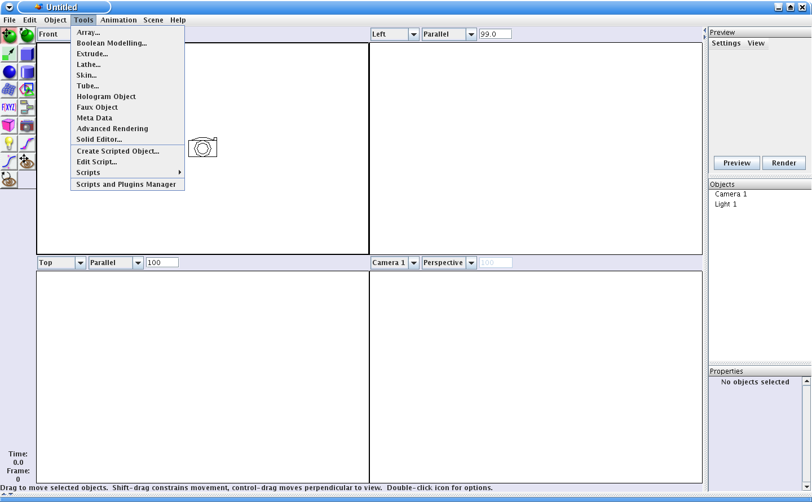
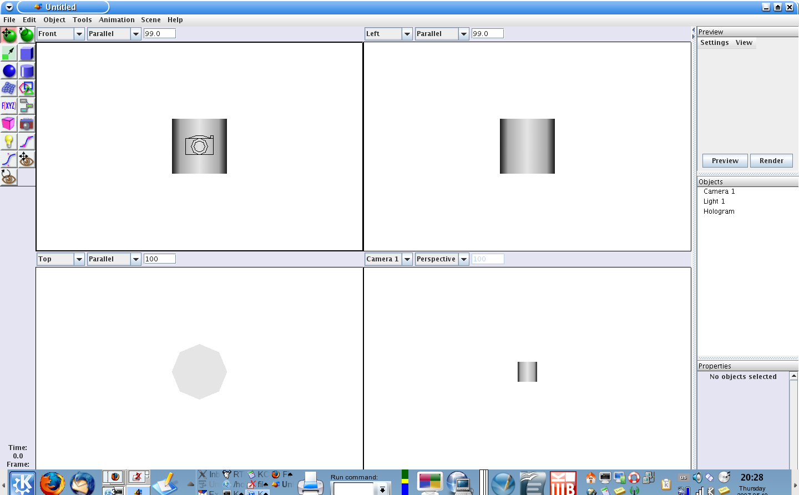
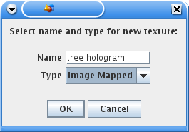
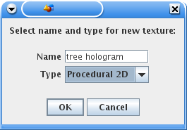
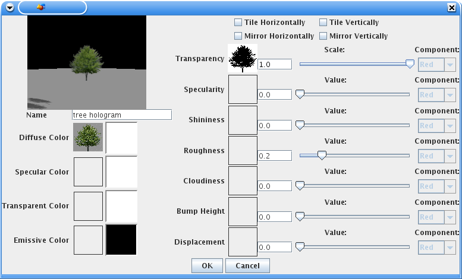
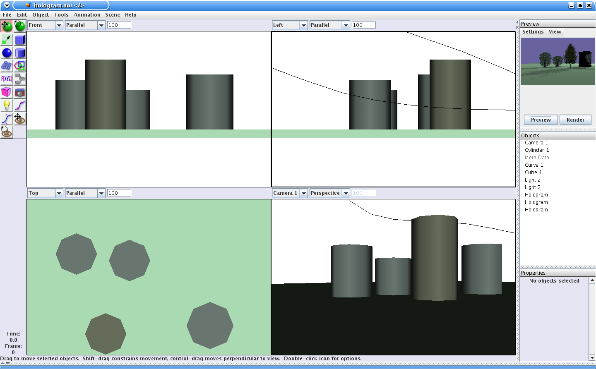

Hologram Objects
1.Overview
Hologram objects are provided by the 'Hologram' plugin. As their name suggests, Hologram objects create a 3D projected image from 2D data.
The Typical use of Hologram objects is to quickly create a crowd or forest effect using 2D images. While Holograms do exist in 3D space, and do cast shadows as you'd expect a 3D object to do, they are not full 3D objects and so have limitations.
It is important to understand two main things about hologram objects:
- Hologram objects are only rendered by Raytracer renderers. All other renderers display a hologram as a cylinder.
- Hologram objects are always aligned so that they face the viewer. Hence there is no point trying to set textures for anything other than the front face.
2. Creating
Create a new Hologram object using the "Hologram Object" entry in the "Tools" menu.

Hologram objects are displayed as a cylinder of the height and width of the projected image. If you change the height or width of the cylinder (or change the Y or X size of the hologram object's properties) you will change the corresponding dimension of the resulting hologram.

3. Texturing
Hologram objects can have textures applied to them, and in fact they do nothing useful without a texture. Since you are likely to have more than one hologram in a scene (unlike Princess Leia), it makes sense to create and name the texture so it can easily be reused. You can use an ImageMapped texture, or a 2D procedural texture. Which you choose depends on your preferences, and what you need from the texture.


If you choose to make it an ImageMapped texture, then you will want to set it up something like this to begin with:

Important notes:
- To begin with, disable all tile and mirror options.
- You will probably want to make a transaprency mask and apply it to the transparency channel. This ensures that the hologram is transparent wherever the there are no image pixels.
If you want more flexibility, then you may decide that a procedural texture is better for your purposes. In this case, you will probably want to start with an image module in the texture. If your image has a transparency channel and a transparent background, then you can set your texture up like this

Otherwise, you will need to make a separate image to use as the transparency mask, and set you texture up like this:

Once you have created and named your texture, you can apply it to your hologram object.
Note: Remember that the hologram will not display its texture in the scene view, nor when rendered with the Raster renderer.

Notice that in the image above the hologram objects are displayed as cylinders in the scene view, but are rendered as their projections by the Raytracer in the previewer (think of the Raytracer as an R2D2 which is used to play a hologram).
4. Tips and Tricks
In AOI, image-based textures are implemented as MappedTextures and in fact AOI normally requires you to adjust the texture mapping whenever you change the dimensions of the associated object. Hologram Objects attempt to automate this for you, so if you increase the height of a Hologram object, the texture mapping is adjusted to suit. If you change a dimension of a hologram object and its projected image (eg in the preview) does not change to match, simply select the hologram object, open its texture mapping window, and click OK. This causes the texture mapping to be reapplied, and usually fixes any problems. Obviously as wrinkles in the code are ironed out, this procedure should no longer be needed.
If you see a black stripe at the edge (left, right top or bottom) of your hologram when it is rendered, then you probably need to adjust either the image scale or (less likely) the scale in the texture mapping.
Similarly, if you see black artifacts or the occasional black face on the top or bottom of a hologram rendering, then try increasing the Y scale value in the Texture image properties (as distinct from the TextureMapping properties). It seems there is the possibility of rounding errors, and in one example, adding 0.01 to what otherwise seemed to be the correct Y size cured the problem.
For more detailed information on textures, see the AOI manual.